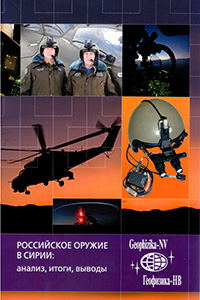

Статьи и публикации сотрудников предприятия
По результатам проведенных исследований и разработок опубликовано более 200 статей в различных изданиях, среди которых можно выделить:
- Грузевич Ю.К., Гордиенко Ю.Н., Балясный Л.М., Альков П.С., Иванов В.Ю., Дятлов А.Л., Ваценко П.И. Фотоприемный модуль с фотокатодом с барьером Шоттки на основе структуры InP/InGaAs/InP:Ag и с чувствительностью до 1,7 мкм. Прикладная физика. 2015. № 4. С. 76-81.
- Грузевич Ю.К., Гордиенко Ю.Н., Балясный Л.М., Поздняков В.В., Ветров С.А., Ваценко П.И., Иванов В.Ю. Фотоприемные модули на основе электронно-оптических преобразователей с различными фотокатодами с отрицательным электронным сродством и барьером Шоттки, чувствительные от 0,2 мкм до 1,7 мкм. В сборнике: Труды XXIV Международной научно-технической конференции по фотоэлектронике и приборам ночного видения 2016. С. 241-245.
- Грузевич Ю. К., Николаев А. Г., Тележников В. Н. Проблемы создания оптического томографа для медицинских технологий / Медико-технические технологии на страже здоровья «Медтех - 2004«: сборник трудов 6 Научно-техн. конф., 10-17 октября 2004 г. / МГТУ им. Н. Э. Баумана. - М., 2004. - С. 125-128.
- Seismocardiography system based on micromechanical sensors, 2018 IERI International Conference on Medical Physics, Medical Engineering and Informatics. Basic Clin Pharmacol Toxicol, 123: 9-10. doi:10.1111/bcpt.13100.
- А remote diagnostic system for screening and early diagnostics of internals diseases, 2018 IERI International Conference on Medical Physics, Medical Engineering and Informatics. Basic Clin Pharmacol Toxicol, 123: 10. doi:10.1111/bcpt.13100.
- А new method of oncological diseases treatment with high reliability, 2018 IERI International Conference on Medical Physics, Medical Engineering and Informatics. Basic Clin Pharmacol Toxicol, 123: 10-11. doi:10.1111/bcpt.13100.
- Ачильдиев, В.М., Грузевич, Ю.К., Солдатенков В.А., Рязанов С.С. Микроминиатюрные системы позиционирования на основе микромеханических акселерометров и гироскопов для нашлемных систем целеукзаний и индикации. – М.: Вестник МГТУ им. Н.Э. Баумана. Сер. «Приборостроение». 2008. №4.-С.56-64
- Ачильдиев, В.М., Левкович, А.Д., Солдатенков, В.А. и другие. Оптико-электронный прибор для определения географический координат удаленного объекта с комплексированной микромеханической бесплатформенной навигационной системой. Сб. трудов 17 Санкт-Петербургской международной конференции по интегрированным навигационным системам,-СПб: ЦНИИ «Электроприбор», 2010г. с.269-276.
- Ачильдиев, В.М., Левкович, А.Д., Солдатенков, В.А. и другие. Оптико-электронный прибор для определения географический координат объекта наблюдения для артиллерийских и ракетных комплексов. Сборник трудов 22 Всероссийской межвузовской научно-технической конференции «Электромеханические и внутрикамерные процессы в энергетических установках, струйная акустика и диагностика, приборы и методы контроля природной среды, веществ, материалов и изделий», ч.1- Казань, 2010. с. 223-225
- Ачильдиев В.М., Грузевич Ю.К., Евсеева Ю.Н. и др. Нашлемная система целеуказания и индикации/ Солдатенков В.А., Левкович А.Д. // Труды XXIII Международной научно-технической конференции по фотоэлектронике и приборам ночного видения. М: ОАО «НПО «Орион», 2014г. С.331-335
- Солдатенков В.А., Беликова В.Н., Грузевич Ю.К. Пилотажные очки третьего поколения с вводом информации и целеуказанием / Поздняков В.В., Ачильдиев В.М., Евсеева Ю.Н., Альков П.С. // X Юбилейный Международный форум «Оптические системы и технологии» Официальный каталог: Тезисы докладов участников научно-практической конференции. М, 2014. С.81
- Левкович, А.Д., Ачильдиев, В.М., Грузевич, Ю.К. и др. Оптико-электронный прибор для определения географический координат удаленного объекта. / ГОУ ВПО МГУЛ, 2012 №6 (89), с. 139-145., - Москва, 2010.
- Ачильдиев, В.М., Левкович, А.Д., Грузевич Ю.К. Солдатенков, В.А. и другие. Оптико-электронный прибор для определения географический координат объекта наблюдения для артиллерийских и ракетных комплексов. Сборник трудов 22 Всероссийской межвузовской научно-технической конференции «Электромеханические и внутрикамерные процессы в энергетических установках, струйная акустика и диагностика, приборы и методы контроля природной среды, веществ, материалов и изделий», ч.1- Казань, 2010. с. 223-225.
- Левкович, А.Д., Ачильдиев, В.М., Грузевич, Ю.К. и др. Использование микромеханических гироскопов для электронной стабилизации видеоизображения. / Сб. трудов XVII Санкт-Петербургской международной конференции по интегрированным навигационным системам – СПб: ЦНИИ «Электроприбор» 2011г., с. 102-104.
- В. А. Солдатенков, Ю.К. Грузевич, В. М. Ачильдиев, А. Д. Левкович, Э. С. Литвак. Оптико-электронный прибор для наблюдения и регистрации изображения объекта и определения его географических координат //СПб. Оптический журнал, №8, 2012.
- Солдатенков, В.А., Грузевич, Ю.К., Ачильдиев, В.М. и др. Информационные измерительные системы на основе микромеханических и наномеханических датчиков угловой скорости и линейного ускорения Лесной вестник МГУЛ, 2015, №3, с. 80-86.
- Солдатенков, В.А., Грузевич, Ю.К., Ачильдиев, В.М. Чаплыгин, Ю.А., Тимошенков, С.П., Бедро, Н.А. Методы первичной цифровой обработки сигналов микромеханического волнового твердотельного гироскопа. Информационно-измерительные и управляющие системы № 2, т.9, М. Радиотехника, 2011, с.39-55.
- Солдатенков, В.А., Грузевич, Ю.К., Ачильдиев, В.М., Бедро, Н.А. Микромеханический вибрационный гироскоп-акселерометр на основе автоэлектронной эмиссией. Информационно-измерительные и управляющие системы № 8, т.8, М. Радиотехника, 2010, с.9-15.
- Солдатенков, В.А., Грузевич, Ю.К., Ачильдиев, В.М., Лисов В.М., Зорин П.Ф., Левкович,А.Д. Использование микромеханических гироскопов для электронной стабилизации видеоизображения. . Сб. трудов 17 Санкт-Петербургской международной конференции по интегрированным навигационным системам,-СПб: ЦНИИ «Электроприбор», 2010г. с.269-276.
- Солдатенков, В.А., Грузевич, Ю.К., Ачильдиев, В.М., Ю.Н. Евсеева. Полусвободная в азимуте курсовая вертикаль на основе микромеханического без платформенного инерциального блока. Сб. трудов 22 Санкт-Петербургской международной конференции по интегрированным навигационным системам, -СПб: ЦНИИ «Электроприбор», 2015г. с.401-404.
- Грузевич, Ю.К., Солдатенков, В.А., Ачильдиев, В.М., Бедро, Н.А., Воронин И.В., Седова А.Д. Наноэлектромеханический преобразователь с автоэлектронной эмиссией – новый приемник длинноволнового оптического излучения. Вестник МГТУ им. Баумана. Серия «Приборостроение», 2012.
- Ачильдиев, В.М., Грузевич, Ю.К., Солдатенков, В.А., Левкович, А.Д. Системы позиционирования для оптико-электронных систем наблюдения и ориентации. \ Вестник Московского государственного университета леса, – М.:ГОУ ВПО МГУЛ, 2009, №6, с.52-57.
- Ачильдиев, В.М., Бедро, Н.А., Грузевич, Ю.К., Солдатенков, В.А. Технология изготовления наномеханических датчиков с автоэлектронной эмиссией. Сборник трудов 2 международной конференции «Технология производства перспективных МЭМС - приборов». г. Заречный, 1-2 декабря 2012, стр.5.
- Ачильдиев, В.М., Грузевич, Ю.К., Солдатенков В.А. Информационные измерительные и оптико-электронные системы на основе микро- и наномеханических датчиков угловой скорости и линейного ускорения. –Москва : Издательство МГТУ им. Н.Э. Баумана, 2016, 260с.
- Солдатенков В.А., Грузевич Ю.К., Ачильдиев В.М. и др. Современные круглосуточные оптико-электронные системы и микромеханические инерциальные датчики для оснащения робототехнических комплексов. Сборник трудов ВНК «Роботизация Вооруженных Сил Российской Федерации. Москва, 2016.
- Грузевич Ю.К., Солдатенков В.А., Ачильдиев В.М., Бедро Н.А., Комарова М.Н., Евсеева Ю.Н., Левкович А.Д. Исследование уровней микровибрации в лазерном интерферометре с системой активной виброизоляцией. //Оптический журнал. 2018. Том 85, №5. С. 1-7.
- Ачильдиев В.М., Солдатенков В.А., Басараб М.А., Бедро Н.А., Грузевич Ю.К., Евсеева Ю.Н., Коннова Н.С., Левкович А.Д. Сейсмокардиоблок на основе микромеханических датчиков. Электронный сб. трудов 25 Санкт-Петербургской международной конференции по интегрированным навигационным системам. СПб: ЦНИИ «Электроприбор», 2018г. С.185-194.
- Achildiev V.M., Soldatenkov V.A., Basarab M.A., Bedro N.A., Gruzevich U.K., Evseeva U.N., Konnova N.S., Levkovich A.D. Cardioseismometer unit based on micromechanical sensors. 25-rd Saint Petersburg International Conference on Integrated Navigation Systems. May 28-30, 2018.
- Ачильдиев В.М., Солдатенков В.А., Бедро Н.А., Грузевич Ю.К., Есаков В.А. Комарова М.Н., Некоторые особенности идентификации погрешностей микромеханических акселерометров в составе датчиков микровибраций и сейсмокардиоблоков. Международный форум «Микроэлектроника 2018». Сборник тезисов докладов. Республика Крым, г. Алушта (1-6) октября 2018. С. 517-519.
- Ачильдиев В.М., Солдатенков В.А., Басараб М.А., Бедро Н.А., Грузевич Ю.К., Евсеева Ю.Н., Коннова Н.С., Левкович А.Д. Успенский В.М. Электросейсмокардиоблок в составе электрокардиоблока высокого разрешения и сейсмокардиоблока на основе микромеханических датчиков. Международный форум «Микроэлектроника 2018». Сборник тезисов докладов. Республика Крым, г. Алушта (1-6) октября 2018. С. 513-516.
- Мазалов А.В., Сабитов Д.Р., Курешов В.А., Падалица А.А., Мармалюк А.А., Балясный Л.М., Гордиенко Ю.Н., Ильевский Д.В., Чистов О.В., Широков Д.А. Гетероструктуры GAN/ALN для фотоэмиттеров с отрицательным электронным сродством. Успехи прикладной физики. 2013. Т. 1. № 5. С. 617-620.
- Грузевич Ю.К., Гордиенко Ю.Н., Балясный Л.М., Альков П.С., Иванов В.Ю., Дятлов А.Л., Ваценко П.И. Фотоприемный модуль с фотокатодом с барьером шоттки на основе структуры INP/INGAAS/INP:AG и с чувствительностью до 1,7 МКМ. Прикладная физика. 2015. № 4. С. 76-81.
- Грузевич Ю.К., Гордиенко Ю.Н., Балясный Л.М., Чистов О.В., Альков П.С., Широков Д.А., Жмерик В.Н., Нечаев Д.В., Иванов С.В. Разработка фотокатодов солнечно-слепого диапазона на основе ГЭС нитрида галлия алюминия, изготовленных методом молекулярно-пучковой эпитаксии. Прикладная физика. 2015. № 4. С. 82-87.
- Жмерик В.Н., Кузнецова Н.В., Нечаев Д.В., Шмидт Н.М., Карпов С.Ю., Ржеуцкий Н.В., Земляков В.Е., Кайбышев В.Х., Казанцев Д.Ю., Трошков С.И., Гордиенко Ю.Н., Егоркин В.И., Бер Б.Я., Луценко Е.В., Балясный Л.М., Иванов С.В. Солнечно-слепые уф-фотокатоды и p-i-n фотодиоды на основе AlGaN гетероструктур с поляризационно-легированным p-эмиттерами. В сборнике: Труды XXIV Международной научно-технической конференции по фотоэлектронике и приборам ночного видения 2016. С. 159-163.
- Грузевич Ю.К., Гордиенко Ю.Н., Балясный Л.М., Поздняков В.В., Ветров С.А., Ваценко П.И., Иванов В.Ю. Фотоприемные модули на основе электронно-оптических преобразователей с различными фотокатодами с отрицательным электронным сродством и барьером Шоттки, чувствительные от 0,2 мкм до 1,7 мкм. В сборнике: Труды XXIV Международной научно-технической конференции по фотоэлектронике и приборам ночного видения 2016. С. 241-245.
- Балясный Л.М., Альков П.С., Чепурнов И.А. Разработка «солнечно-слепого« фотоприемного модуля на основе ЭОП III поколения. В сборнике: Актуальные вопросы развития вооружения, военной и специальной техники войск противовоздушной и противоракетной обороны, космических войск воздушно-космических сил Сборник научно-методических трудов I Всероссийской научно-практической конференции. 2016. С. 218-223.
- Шулаев В.М., Балясный Л.М., Оковитый Д.А., Аскретков М.Б., Антонович П.В., Листопад Д.А. Инновационная автоматическая прецизионная вакуумная камерная электропечь модели снвэ-2.4.2/13-ип-ниттин для групповой пайки металлокерамических корпусов. В сборнике: Пайка-2018 Сборник материалов международной научно-технической конференции. 2018. С. 240-247.
- Шулаев В.М., Балясный Л.М., Блаженец В.Е. оптимизация технологии активной пайки металлокерамических корпусов титаносодержащим припоем. В сборнике: Пайка-2018 Сборник материалов международной научно-технической конференции. 2018. С. 248-254.
- Балясный Л.М., Балашов А.Б., Гордиенко Ю.Н., Грузевич Ю.К., Миронов Д.Е., Петров А.Э., Татаурщиков С.С. Высокочувствительный гибридный фотоприемный модуль на основе фотокатодов с отрицательным электронным сродством и матриц ПЗС (КМОП) с электронной бомбардировкой тыльной стороны. Прикладная физика. 2018. № 4. С. 74-78.
- Балясный Л.М., Балашов А.Б., Гордиенко Ю.Н., Грузевич Ю.К., Миронов Д.Е., Петров А.Э., Татаурщиков С.С. Разработка низкоуровневых гибридных приборов на основе фотокатодов с отрицательным электронным сродством и матриц ПЗС с электронной бомбардировкой тыльной стороны. В сборнике: XXV Международная научно-техническая конференция и школа по фотоэлектронике и приборам ночного видения Труды конференции. В 2-х томах. 2018. С. 126-129.
- Шулаев В.М., Балясный Л.М., Грузевич Ю.К., Гордиенко Ю.Н., Недосека Н.М. Особенности технологического цикла активной пайки металлокерамических корпусов вакуумных фотоэлектронных приборов и технические требования к современному оборудованию для его осуществления. В сборнике: XXV Международная научно-техническая конференция и школа по фотоэлектронике и приборам ночного видения Труды конференции. В 2-х томах. Москва, 2018. С. 523-526.
- Балясный Л.М., Гордиенко Ю.Н., Грузевич Ю.К., Недосека Н.М., Шулаев В.М. Активная пайка вакуумно-плотных металлокерамических корпусов фотоэлектронных приборов. Прикладная физика. 2018. № 6. С. 104-109.
Книги сотрудников предприятия
В монографии рассмотрены основные тенденции развития техники ночного видения и физические основы ее работы. Дан анализ современного состояния и тенденций развития электронно-оптических преобразователей (ЭОП) для оптико-электронных приборов ночного видения. Рассматриваются принцип действия ЭОП, основные поколения, их возможности, элементы конструкций, параметры и характеристики и перспективы развития ЭОП. Описана энергетическая структура, оптические и электрофизические свойства различных фотокатодов. Особое внимание уделено фотокатодам на основе материалов с отрицательным электронным сродством, имеющим различную структуру. Представлены методы расчета дальности действия для оптико-электронных приборов ночного видения на основе ЭОП. Книга предназначена научным и инженерно-техническим работникам, аспирантам и студентам старших курсов, специализирующимся в области техники ночного видения.
Рассмотрены основные физические принципы работы и особенности функционирования гироскопов различных видов. Исследованы микромеханические гироскопы и акселерометры с рамочной и консольной конструкциями чувствительного элемента с емкостными и автоэлектронными преобразователями и наноэлектромеханические измерительные преобразователи для измерения тепловых полей малой интенсивности в инфракрасной и террагерцовой областях спектра. Описан синтез регуляторов методом модального управления и идентификации коэффициентов чувствительности к температуре и напряжению питания. Приведены примеры схем построения, моделирования и испытаний систем управления и навигации летательных микроаппаратов на основе бесплатформенных инерциальных блоков, различных информационно-измерительных средств с использованием наклономеров, оптико-электронных устройств наблюдения с определением координат удаленных объектов и нашлемных систем ориентации. Для студентов, аспирантов, инженеров и научных работников.
Список патентов предприятия
Сотрудниками предприятия получены более 50 патентов на изобретения, полезные модели, промышленные образцы:
- Патент на полезную модель №169980 (11.04.2017) Матричный ослабитель потока оптического излучения
- Патент на изобретение №2486467 (27.06.2013) Устройство для измерения и регистрации сферических координат удаленного объекта и способ определения сферических координат удаленного объекта на местности
- Патент на полезную модель №130691 (27.07.2013) Датчик критических углов с индикатором
- Патент на полезную модель №130692 (27.07.2013) Устройство для измерения уклонов при монтаже стапельной оснастки
- Патент на полезную модель №135448 (10.12.2013) Фотокатодный узел вакуумного фотоэлектронного прибора с полупрозрачным фотокатодом ФПМ
- Патент на полезную модель №121593 (27.10.2012) Наноэлектромеханический преобразователь с автоэлектронной эмиссией
- Патент на изобретение №2484483 (10.06.2013) Способ изготовления наноэлектромеханического преобразователя и наноэлектромеханический преобразователь с автоэлектронной эмиссией
- Патент на изобретение №2484483 (10.06.2013) Способ изготовления наноэлектромеханического преобразователя и наноэлектромеханический преобразователь с автоэлектронной эмиссией
- Патент на изобретение № 2540447 (10.02.2015) Способ контроля степени адаптации светотехнического оборудования и контрольно-проверочный прибор
- Патент на полезную модель №121593 (27.10.2012) Наноэлектромеханический преобразователь с автоэлектронной эмиссией
- Патент на изобретение №2524753 (10.08.2014) Фотокатодный узел вакуумного фотоэлектронного прибора с полупрозрачным фотокатодом и способ его изготовления
- Патент на изобретение №2533528 (20.11.2014) Способ определения местоположения или обнаружения объекта
- Патент на изобретение №2516857 (20.05.2014) Способ определения ориентации шлема пилота и устройство нашлемной системы целеуказания и индикации
- Патент на изобретение №2516857 (20.05.2014) Способ определения ориентации шлема пилота и устройство нашлемной системы целеуказания и индикации
- Патент на полезную модель №116224 (20.05.2012) Устройство для измерения и регистрации сферических координат удаленного объекта на местности
- Патент на полезную модель №113230 (10.02.2012) Бортовое устройство контроля параметров движения транспортного средства при дорожно-транспортном происшествии
- Патент на полезную модель №130691 (27.07.2013) Датчик критических углов с индикатором
- Патент на полезную модель №130692 (27.07.2013) Устройство для измерения уклонов при монтаже стапельной оснастки
- Патент на изобретение №2533528 (20.11.2014) Способ определения местоположения или обнаружения объекта
- Патент на изобретение №2524753 (10.08.2014) Фотокатодный узел вакуумного фотоэлектронного прибора с полупрозрачным фотокатодом и способ его изготовления
- Патент на изобретение №2637362 (04.12.2017) Оптический элемент и способ его изготовления
- Патент на изобретение №2480834 (27.04.2013) Бортовое устройство и способ контроля параметров движения транспортного средства при дорожно-транспортном происшествии
- Патент на полезную модель №146842 (20.10.2014) Микромеханический твердотельный волновой гироскоп ФПМ
- Патент на полезную модель №146949 (20.10.2014) Наклономер
- Патент на изобретение №2382986 (27.02.2010) Способ и система измерения уклонов для позиционирования объектов
- Патент на полезную модель №155170 (27.09.2015) Комплексная гиростабилизированная система наблюдения
- Патент на полезную модель №155176 (27.09.2015) Прибор ночного видения
- Патент на полезную модель №157952 (20.12.2015) Прибор наблюдения круглосуточный
- Патент на полезную модель №155170 (27.09.2015) Комплексная гиростабилизированная система наблюдения
- Патент на полезную модель №163855 (10.08.2016) Датчик качки, угла рыскания и курсовой угловой скорости
- Патент на полезную модель № 162343 (10.06.2016) Измеритель угловой скорости
- Патент на изобретение №2381511 (10.02.2010) Способ комплексных испытаний унифицированных систем позиционирования на основе микромеханических акселерометров и гироскопов и автоматизированный стенд для его осуществления
- Патент на изобретение №2371745 (27.10.2009) Способ отображения информации на лобовом стекле транспортного средства
- Патент на полезную модель №162343 (10.06.2016) Измеритель угловой скорости
- Патент на изобретение №2302022 (27.06.2007) Оптическое телескопическое устройство и способ его изготовления
- Патент на изобретение №2302023 (27.06.2007) Способ освещения приборного оборудования и транспарантов световой сигнализации летательного аппарата при наблюдении их через пилотажные очки ночного видения
- Патент на полезную модель №146842 (20.10.2014) Микромеханический твердотельный волновой гироскоп НПМ
- Патент на полезную модель №155176 (27.09.2015) Прибор ночного видения
- Патент на полезную модель № 157952 (20.12.2015) Прибор наблюдения круглосуточный
- Патент на изобретение №2382986 (27.02.2010) Способ и система измерения уклонов для позиционирования объектов
- Патент на полезную модель №158783 (20.01.2016) Устройство осушки и очистки полости оптического прибора ФПМ
- Патент на полезную модель №163855 (10.08.2016) Датчик качки, угла рыскания и курсовой угловой скорости НПМ
- Патент на изобретение №2302022 (27.06.2007) Оптическое телескопическое устройство и способ его изготовления
- Патент на изобретение №2302023 (27.06.2007) Способ освещения приборного оборудования и транспарантов световой сигнализации летательного аппарата при наблюдении их через пилотажные очки ночного видения
- Патент на изобретение №2371745 (27.10.2009) Способ отображения информации на лобовом стекле транспортного средства
- Патент на изобретение №2381447 (10.02.2010) Устройство для измерения сферических координат удаленного объекта и способ определения координат удаленного объекта на местности
- Патент на изобретение №2133973 (27.07.1999) Способ освещения приборного оборудования и транспарантов световой сигнализации летательного аппарата при наблюдении их через пилотажные очки ночного видения
- Патент на полезную модель №162200 (27.05.2016) Оптическая схема голографического индикатора знако-символьной информации на основе комбинированного дифракционного оптического элемента НПМ
- Патент на полезную модель №164949 (27.09.2016) Оптическая схема индикатора знако-символьной информации с пропускающими плазмонными решетками НПМ
- Патент на изобретение №2133973 (27.07.1999) Способ освещения приборного оборудования и транспарантов световой сигнализации летательного аппарата при наблюдении их через пилотажные очки ночного видения
- Патент на полезную модель №169980 (11.04.2017) Матричный ослабитель потока оптического излучения ФПМ
- Патент на изобретение №2486467 (27.06.2013) Устройство для измерения и регистрации сферических координат удаленного объекта и способ определения сферических координат удаленного объекта на местности
- Патент на полезную модель №172779 (24.07.2017) Патрон для центрирования линз